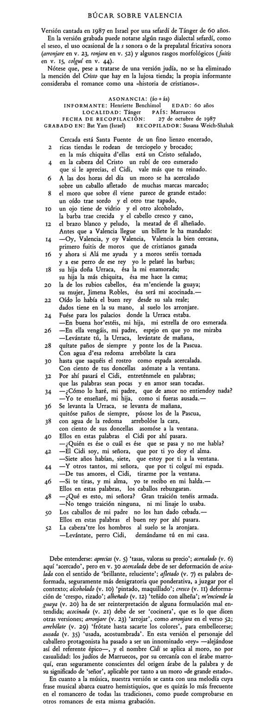

Grabación: romance
(Haz clic en el enlace para escuchar la grabación)
"Cercada está Santa Fuente" (versión cantada de "Helo, helo por do viene")
Los romances son de gran interés porque son un género que ha sobrevivido en la tradición oral popular (es decir, entre personas —incluso analfabetas— que no los aprendieron de fuentes escritas sino de memoria de otras personas que los cantaban). Hay toda una serie de romances más antiguos que ha perdurado de una forma u otra hasta nuestros días. Sin embargo, como es de esperar, un texto como el del romance "Helo, helo por do viene" puede cambiar mucho a lo largo de los siglos si sólo se transmite oralmente. Se notan en esta versión varios cambios importantes, pero el núcleo narrativo y gran parte del vocabulario básico son los mismos. Aunque es un episodio asociado con Rodrigo Díaz, aquí "el Cidi" se refiere al caballero moro, no al caudillo cristiano de Valencia. Hay también elaboraciones del diálogo y versos de otro romance que se introdujeron en algún momento de la transmisión oral del poema a lo largo de los siglos. El poema en esta versión ha aumentado bastante: la interpretación completa dura más de nueve minutos. (Aquí sólo se ofrece el primer fragmento.) A pesar de ser un poema de tradición cristiana, la mujer que canta esta versión es una señora israelí de origen sefardí: sus antepasados huyeron de la Península Ibérica (Sefarad para los judíos) en 1492 cuando los reyes católicos expulsaron a todos los judíos de sus reinos. La mayoría de los sefardíes expulsados acabó en el norte de África y Turquía. (La mujer que canta aquí se crió en Tánger, Marruecos.) Durante siglos no hubo contacto entre sefardíes e hispanohablantes de la Península Ibérica y las Américas por lo que la lengua que hablaban se desarrolló independientemente y, aunque ha cambiado en ciertos aspectos, todavía conserva algunos que son propios del castellano medieval. Los dialectos de los judíos sefardíes se denominan de varias maneras, entre ellas, "judezno", "sefardí", "ladino" o "judeo-español". Cada día hay menos hablantes y es posible que el judeo-español desaparezca en un par de generaciones. |
 |
(Grabación original: Varios intérpretes. Romancero. Biblioteca Crítica, 1994.)